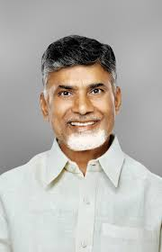

Mission
To create sustainable social and economic transformation in Andhra Pradesh.
A registered charitable trust focused on sustainable social and economic transformation in Andhra Pradesh.
To create sustainable social and economic transformation in Andhra Pradesh.
A prosperous, educated, healthy Andhra Pradesh where no family is left behind.
CBN Trust channels Telugu pride, donor generosity, and volunteer energy into structured programs that serve underprivileged communities across Andhra Pradesh through education, healthcare, and community development.
For donors and CSR teams, the trust offers an AP-specific alternative to generic national giving: rooted, visible, and aligned to ground-level needs.

Framed as philanthropic leadership and public trust, not electoral activity.
G.ABHINETHRA leads donor coordination, trust communication, and giving support for education, healthcare, and community development programs across Andhra Pradesh.
CBN Trust presents its charitable work in education, healthcare, and community development within a broader Andhra Pradesh development vision associated with N. Chandrababu Naidu's public life.

Trust is earned through clarity, documentation, and service.
Clear use of funds, visible programs, and direct donor communication through the trust office.
Built with villages, families, volunteers, and Telugu diaspora supporters.
Education, healthcare, and livelihoods that move families toward stability.
CBN Trust is a registered charitable trust focused on education, healthcare, and community development, not electoral activity. Its programs serve communities regardless of political affiliation.
Funds are directed toward program delivery, field coordination, documentation, and beneficiary support, with receipts and transfer records handled through the trust office.
Verify directly with G.ABHINETHRA using +91 9494947330, and match bank transfers to Account Name CBN TRUST, Account Number 42975982199, IFSC Code SBINOO16857, Bank Name SBI MG RODE VIJAWDA.